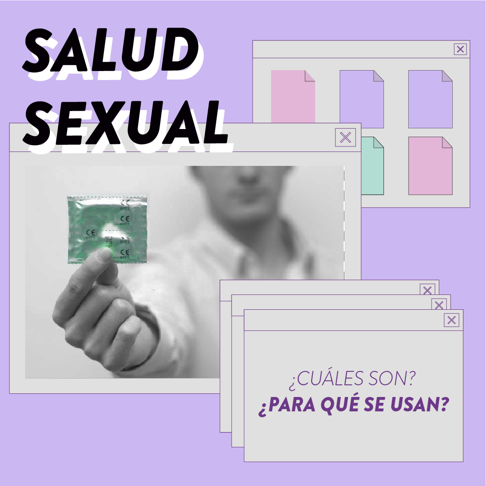
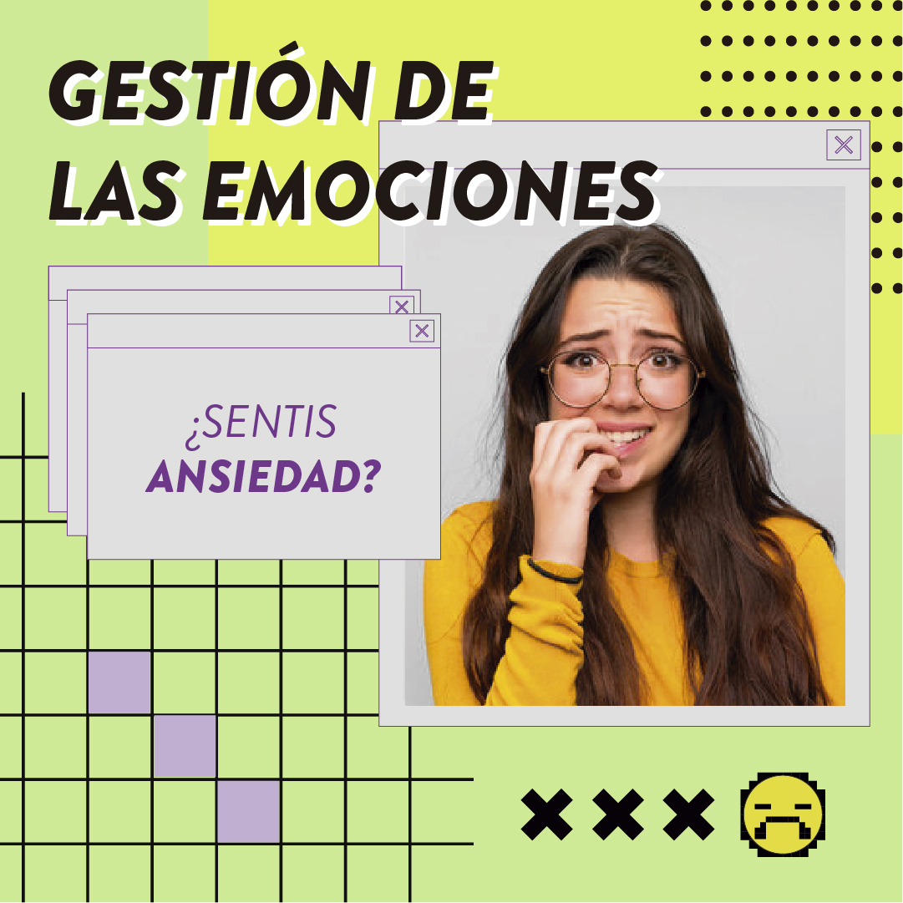
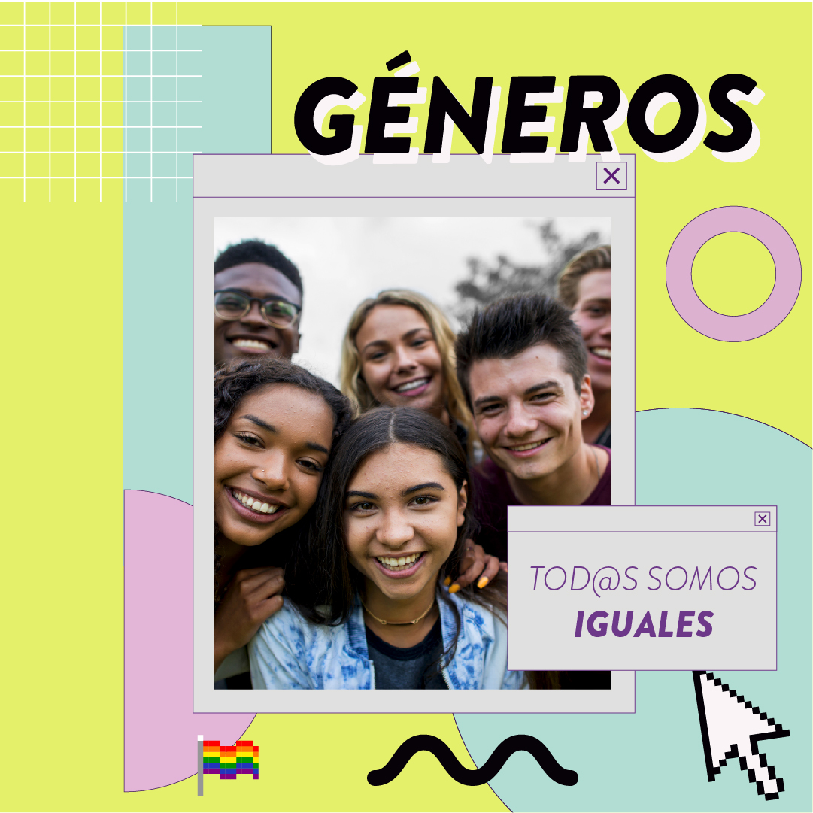
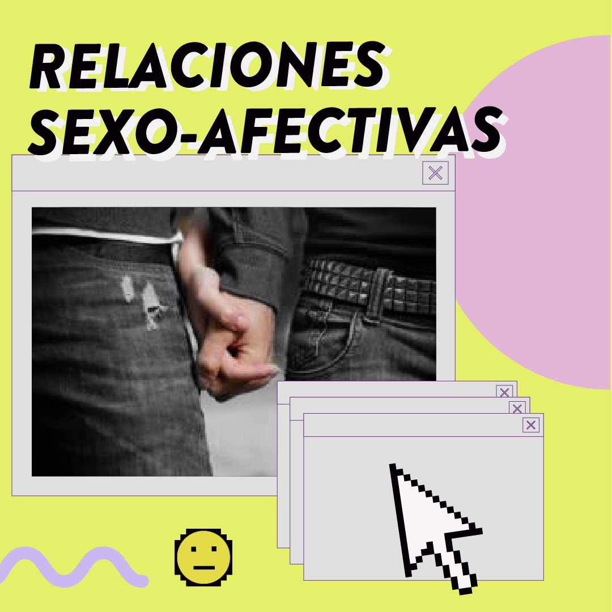
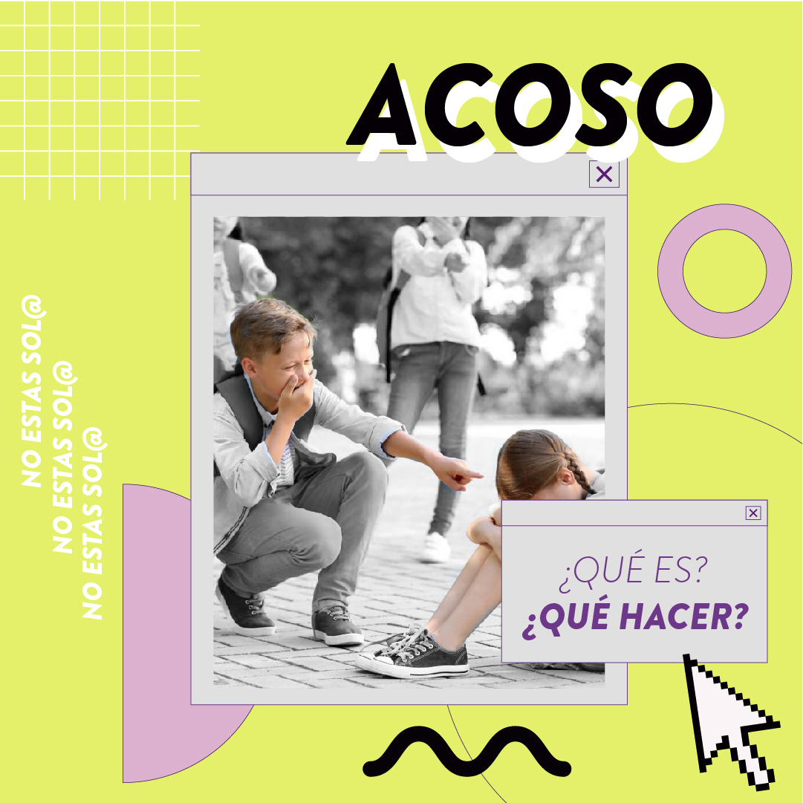
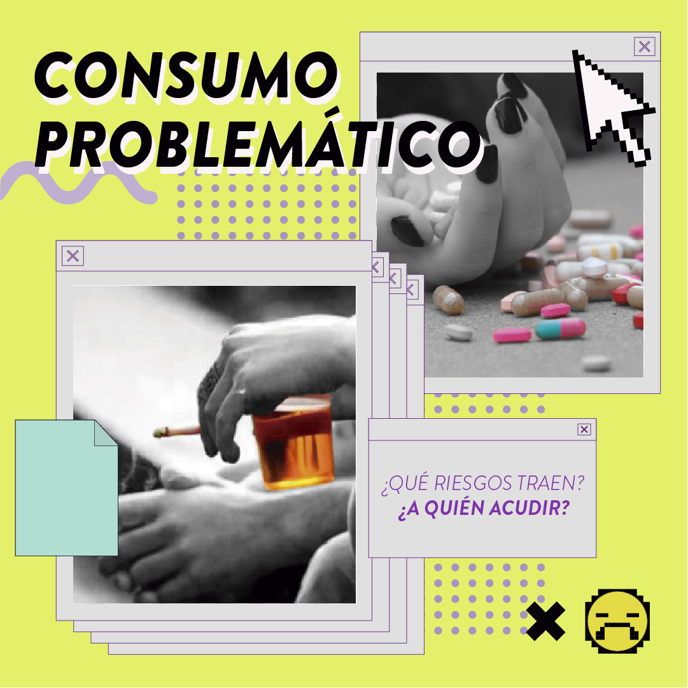
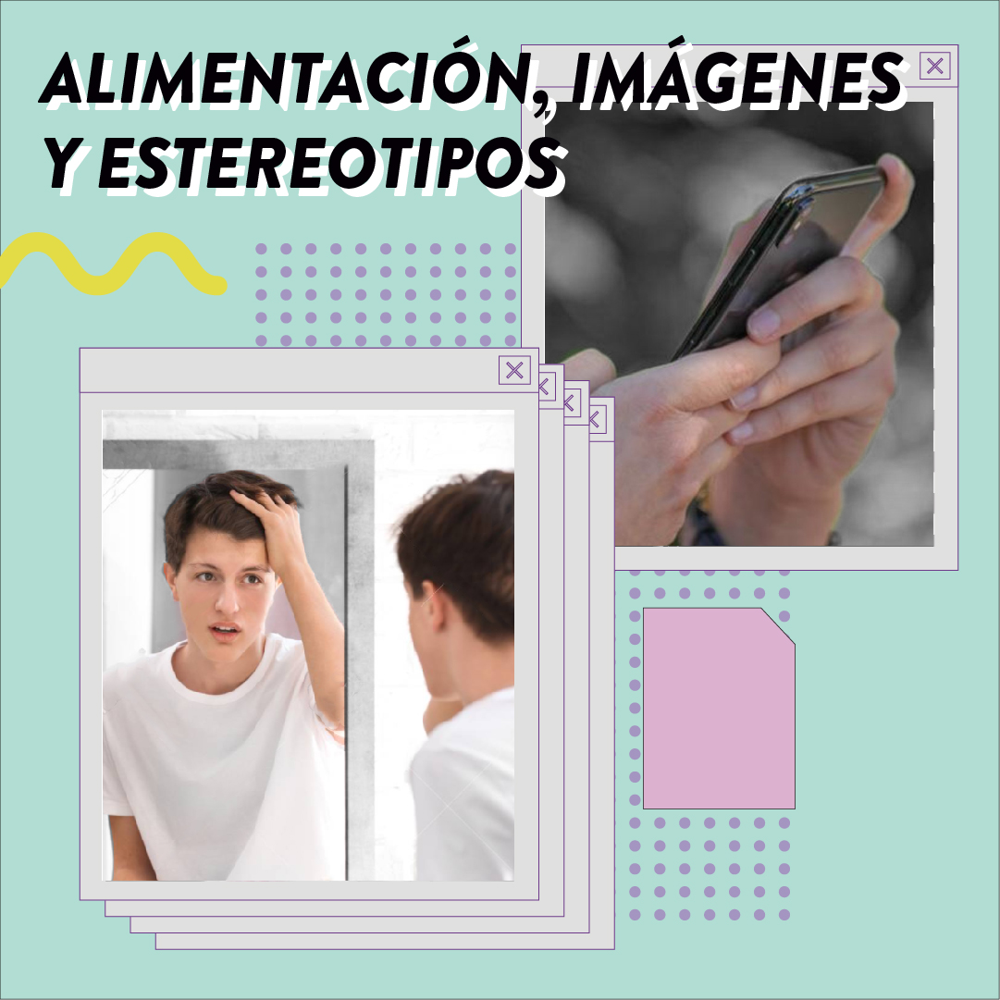

<ion-app>
  <ion-menu-toggle>
    <ion-menu side="end" menuId="first" contentId="main">
      <ion-header color="tertiary">
        <ion-toolbar color="tertiary">
          <a routerLink="/">
            
          </a>
        </ion-toolbar>

        <link rel="preconnect" href="https://fonts.gstatic.com">
        <link href="https://fonts.googleapis.com/css2?family=Lobster&display=swap" rel="stylesheet">

      </ion-header>
      <ion-content color="tertiary">
        <ion-list color="tertiary">

            <ion-item color="tertiary">
                <a routerLink="/salud-sexual">
                  
                </a>
                <a routerLink="/gestion-emociones">
                  
                </a>
            </ion-item>
            <ion-item color="tertiary">
              <a routerLink="/generos">
                
              </a>
              <a routerLink="/sexo-afectivas">
                
              </a>
            </ion-item>
            <ion-item color="tertiary">
              <a routerLink="/acoso">
                
              </a>
              <a routerLink="/consumo-problematico">
                
              </a>
            </ion-item>
            <ion-item color="tertiary">
              <a routerLink="/alimentacion">
                
              </a>
              <div class="contact">
                <h4>Seguinos</h4>
                <div class="social__container">
                  <ion-icon
                    color="light"
                    name="logo-facebook"
                  >
                  </ion-icon>
                  <ion-icon
                    color="light"
                    name="logo-twitter"
                  >
                </ion-icon>
                <ion-icon
                  color="light"
                  name="logo-instagram"
                >
                </ion-icon>
                </div>
              </div>
            </ion-item>
            <div class="contact__container ion-padding" color="tertiary">
              <h4>
                Contáctate
              </h4>
              <p>Servicio de adolescencia</p>
              <p>adolescenciaservicio@gmail.com</p>
              <p>tel: 4796-7200 int 7309</p>
              <ion-button
                expand="block"
                shape="round"
                color="primary"
              >
                Pedí turno
              </ion-button>
            </div>
        </ion-list>
      </ion-content>
    </ion-menu>
  </ion-menu-toggle>

  <ion-router-outlet id="main"></ion-router-outlet>
</ion-app>
